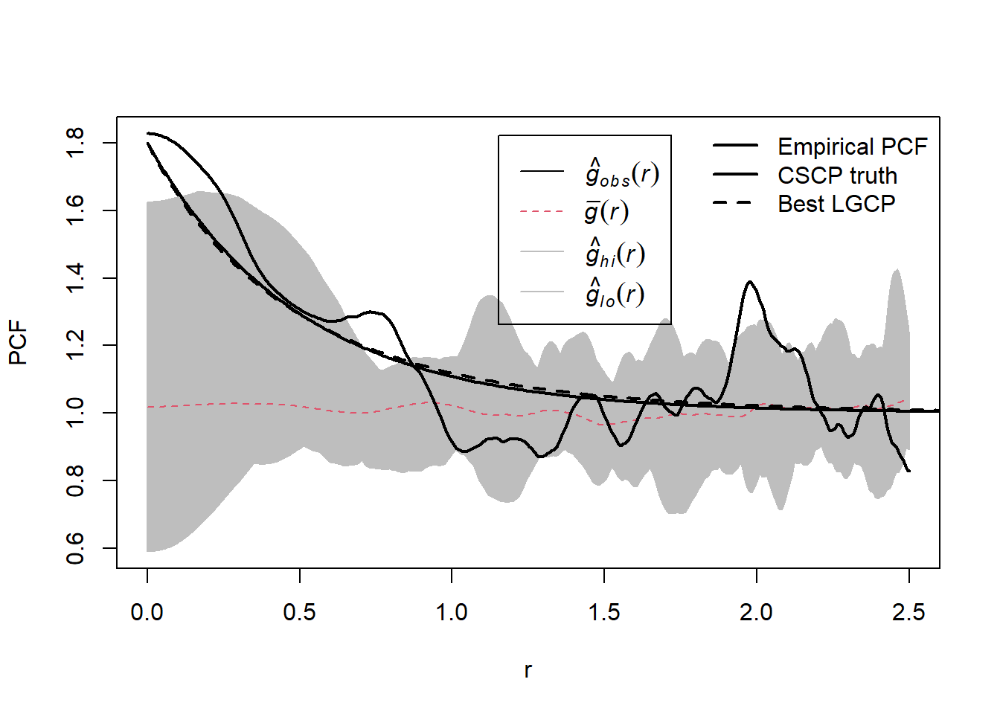
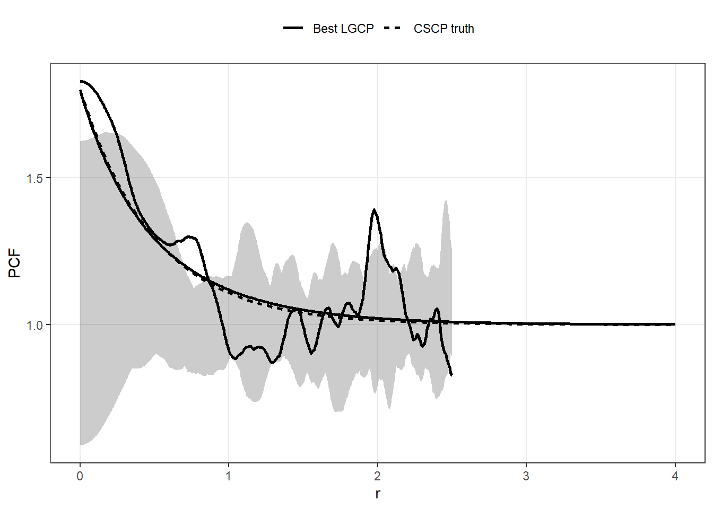

The supremum over \(x\) is approximated using a fine grid over \([0,1]\), and the minimisation over \(p\) is carried out using one-dimensional optimisation.
Code:
Code
# Shouldve just used my package functions, but was still under constructiong_cscp <-function(r, phi, s_C) {1+ phi *exp(-2* r / s_C)}g_lgcp <-function(r, phi, s_L) { (1+ phi)^(exp(-r / s_L))}# E(phi, p) = sup_{x in [0,1]} | exp(c x^p) - 1 - phi x |pcf_error_p <-function(phi, p, x_grid =seq(0, 1, length.out =4000)) { cval <-log(1+ phi)max(abs(exp(cval * x_grid^p) -1- phi * x_grid))}# same thing, but using a scale ratio alpha = s_L / s_Cpcf_error_alpha <-function(phi, alpha, x_grid =seq(0, 1, length.out =4000)) { p <-1/ (2* alpha)pcf_error_p(phi, p, x_grid = x_grid)}# Slope matching - intially thought I would include as a # "rule-of-thumb" type thing, but it's too shitty to keep tbhalpha_slope <-function(phi) {ifelse(phi ==0, 1/2, ((1+ phi) *log(1+ phi)) / (2* phi))}p_slope <-function(phi) {1/ (2*alpha_slope(phi))}find_optimal_match <-function(phi,x_grid =seq(0, 1, length.out =4000),alpha_lower =0.05,alpha_upper =5) { obj_alpha <-function(alpha) {pcf_error_alpha(phi, alpha, x_grid = x_grid) } opt <-optimize(obj_alpha, interval =c(alpha_lower, alpha_upper)) alpha_opt <- opt$minimum err_opt <- opt$objective alpha_h <-alpha_slope(phi) err_h <-obj_alpha(alpha_h)tibble(phi = phi,alpha_opt = alpha_opt,alpha_slope = alpha_h,p_opt =1/ (2* alpha_opt),p_slope =p_slope(phi),err_opt = err_opt,err_slope = err_h )}
41.2 Optimal scale relationship
We first examine how the optimal LGCP scale relates to the CSCP scale.
Define the scale ratio
\[
\alpha^*(\phi) = \frac{s_L^*(\phi)}{s_C}.
\]
The figure below shows \(\alpha^*(\phi)\) as a function of \(\phi\), along with the slope-matching approximation
Originally, I wanted to have some sort of closed-form approximation of the best approximating ratio for a given \(\phi\), but it seems less useful than just making a function which numerically calculates it for you basically instantly.
To assess whether the two models can be distinguished in practice, we compare the difference between the PCF curves to the sampling variability of the PCF estimator.
We:
simulate a CSCP point pattern,
estimate the PCF,
construct simulation envelopes,
and overlay the true CSCP PCF and the best-fitting LGCP PCF.
Note
Not finished, but you get the idea of what I’m trying to show here, right?


41.6 Interpretation
Across all values of \(\phi\), the discrepancy between the LGCP and CSCP PCFs can be made very small by appropriately rescaling the LGCP.
Moreover, the difference between the two PCF curves is typically small relative to the sampling variability of standard PCF estimators.
This suggests that, in practice, the two models are difficult to distinguish based on second-order structure alone.
41.7 What’s next?
So far we have shown:
The PCFs of the LGCP and CSCP can approximate each other closely, and
The differences between the two families are small relative to the sampling variability of standard PCF estimators.
This is nice, however what we would like to claim is:
Procedures based on second-order summaries, such as minimum contrast estimation, lead to similar conclusions under LGCP and CSCP models.
The next section investigates this empirically by fitting each models to data generated by both LGCPs and CSCPs, and compares the resulting fits and parameter estimates.
41.8 Extras
41.8.1 Difference between PCFs
To highlight where the two models differ, we plot
\[
g_{LGCP}(r) - g_{CSCP}(r)
\]
for selected values of \(\phi\).
This is looking at how different the two curves are as we increase \(r\).